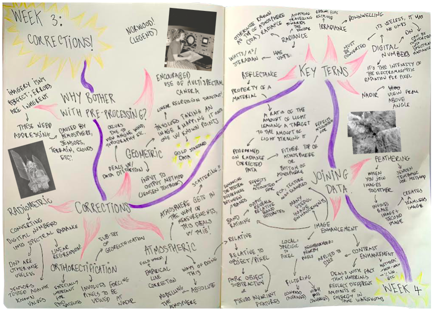
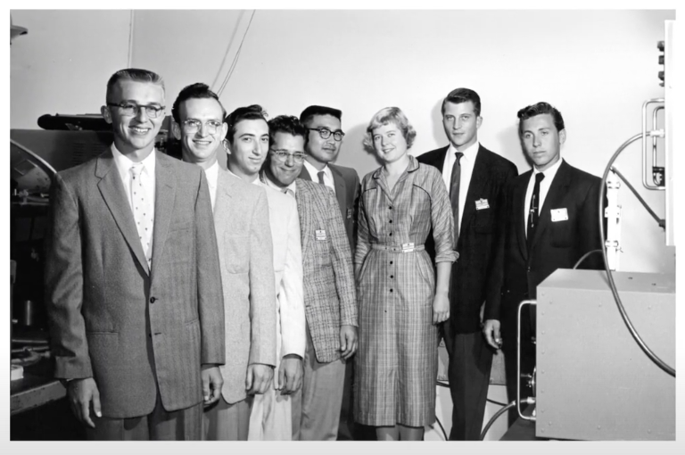
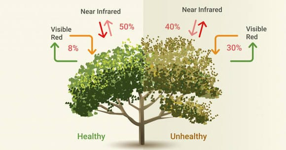
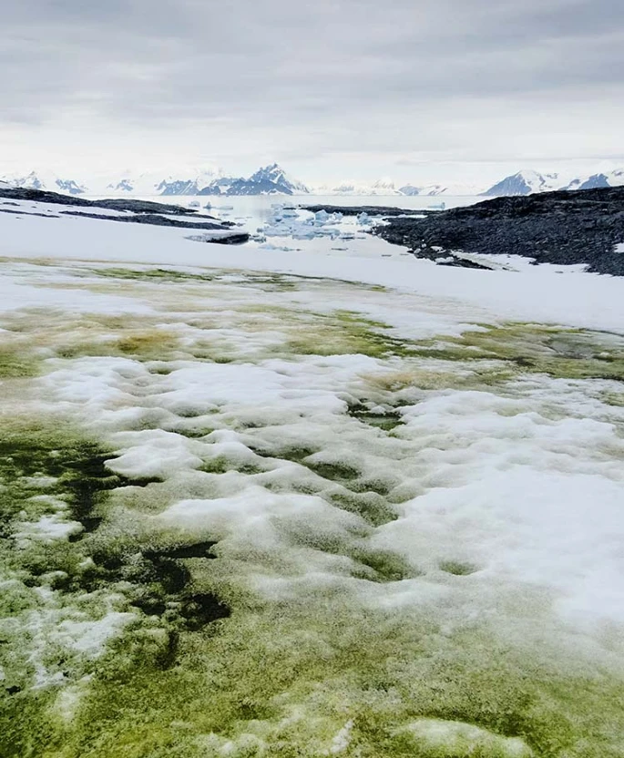
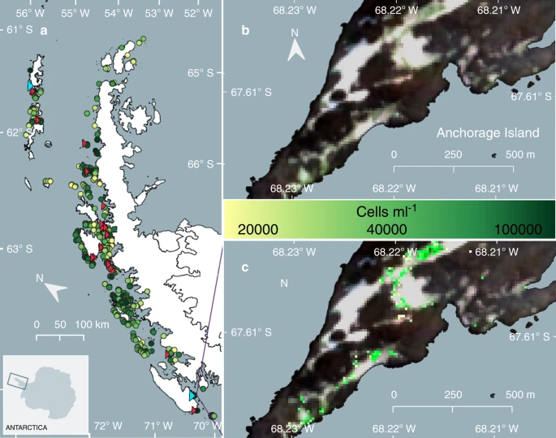
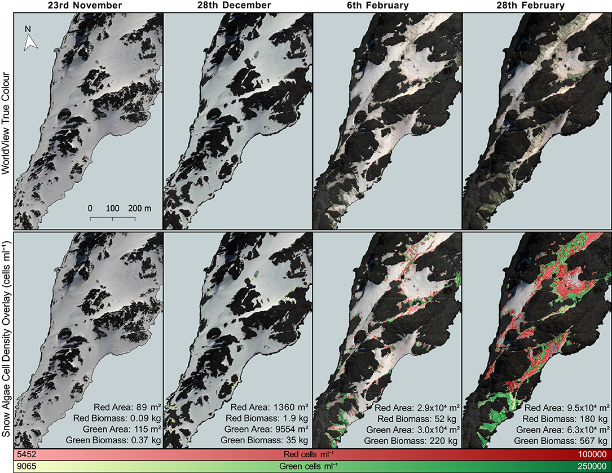

3 Corrections
3.1 Summary
This week’s lecture was very content heavy, so to summarise I decided to create a road map that outlines the content covered following the path the lecture took - this is pictured below!

{kind=link}
One thing that really piqued my curiosity during the lecture was the mention of Virginia Norwood and her pioneering Landsat work. Very infrequently do I hear mention of female scientists so I always find it exciting to learn more about their work and role in scientific history. In one obituary I found this snippet to be particularly amusing. The article discusses how many scientists within the NASA x Geological Survey team were skeptical that her multispectral scanner invention would work, believing it to be too clunky and inefficient. Upon it proving to work and Landsat’s subsequent send-off into space, a geologist who was vocally skeptical of the technology was recorded saying “I was so wrong about this. I’m not going to eat crow. Not big enough. I’m going to eat raven.”.

That comment, along with the photo of her at work surrounded by a group of male scientists (above) really resonated with me. I highly recommend reading this obituary (linked below), as it details the lifetime of gender-based obstacles she faced. Norwood really seems like a legend.
3.2 Applications
There is a lot that could be potentially investigated in-depth from this week’s lecture, so to narrow down the task I decided to focus my research on band ratioing as this is a technique I’ve used fairly extensively in the past and find most interesting. Specifically, I wanted to return to a paper that I discovered during my undergraduate degree which inspired me greatly and consider the methods employed in their research in the context of this week’s taught content.
3.2.1 Band ratio: a closer look
As defined by Shahi et al., (2023) in their review of remote sensing methods, band ratioing is ‘a technique in which DN values in one spectral band is divided from the corresponding values in another band’, creating an output known as a ‘ratioed image’ or simply the band ratio. This technique enhances spectral characteristics of specific features in an image, regardless of variation in scene illumination. It is often used for change detection when applied to multitemporal data and has been used in contexts of deforestation, hydrology, agriculture, cryosphere monitoring among others.
Probably the most commonly used band ratio is NDVI, the Normalised Difference Vegetation Index. This index is computed as the difference between near-infrared (NIR) and red reflectance divided by their sum (Gessesse et al., 2019). It is represented by the following formula:
Low NDVI values indicate moisture-stressed vegetation whilst higher values indicate a higher density of green vegetation, as represented in the diagram below.

As mentioned above, most uses of NDVI that I found across past literature are in the context of deforestation (EG. Othman et al., 2018 in Malaysia, Muñoz Peña et al., 2015 in Peru, Ngigi et al., 2004 in Kenya etc.) and have demonstrated the power of using band ratioing to monitor landscape change over time. However, uses of NDVI have not been limited to forested regions.
3.2.2 Antarctica going green
During my undergraduate degree I was lucky enough to attend a lecture delivered by Dr Andrew Gray, a glacial biogeochemist specialising in the use of remote sensing to monitor polar environments. Until this point I had been exposed to NDVI several times (predominantly in the context of monitoring Scottish forests), but never beyond this. In Andrew’s talk he explained the research he was doing in Antarctica studying seasonal recurrent algal blooming that was transforming the otherwise white swathes of ice into multicoloured landscapes. In his research, he sought to monitor these blooms - believed to be lowering the surface albedo and thus contributing significantly to glacial ablation - by collecting spectral measurements during fieldwork in Antarctica and relating these to satellite imagery back in the lab.

This research was published in his jointly authored 2020 paper, in which he describes the correction and image enhancement methods that were used - all of which were mentioned in this week’s taught content. These include orthorectification, atmospheric correction, masking and filtering as well as the application of band math. Finally, to identify algae across the ice they used used the spectral measurements obtained in the field and compared these with the NDVI results from band ratioing of the Sentinel-2 imagery used to estimate algal bloom coverage. Their research identified 1679 individual blooms, averaging 1043 m2, but spanning 300 m2 to 145,000m2. Moreover, they estimated the carbon content of these blooms to be equivalent to 479 tonnes of carbon within a growth season.

I found it really interesting to learn about how NDVI could be applied in polar regions and was encouraged by the success of this study! It definitely doesn’t appear at first thought to be a technique that has any use in the polar regions where vegetation is minimal if present at all, which is probably why it stuck with me since my first reading. This technique cannot be endlessly praised however, as Gray et al., 2020 note problems in the use of NDVI to identify red algae in this paper - they attributed this to limited band sensitivity that hindered the detection of red algae. Ultimately, this means that the number of blooms that they were able to identify was not representative of all blooms, but rather specifically green algal blooms. Whilst I don’t think the authors necessarily tried to hide this shortcoming within the paper, I do think that the abstract glosses over this outcome in the abstract which implies that all snow algae is accounted for in the study (“This increase is predicted to outweigh biomass lost from small islands, resulting in a net increase in snow algae extent and biomass as the Peninsula warms”). If anything, I wish the fact that only green algae was mapped in this study to enhance the point that algae is extensive across the Antarctic peninsula!
I was encouraged to see however that their issues regarding red snow algae detection were addressed in a paper published the following year by Gray et al., 2021, in which they applied NDVI to WorldView imagery that, after performing a spectral angle mapper classification in ENVI had better sensitivity to red algae than the Sentinel-2 imagery used in their original 2020 study. This methodology returned greater results as all algae species were able to be detected (see below).

Moving on from NDVI, one additional thing that came up in my re-reading of Gray’s research that I was reminded of during this week’s lecture was the radiative transfer model he used to perform atmospheric correction in his research. Before this point, I knew that atmospheric correction was essential, but understood little about the mechanisms by which it worked let alone the variety of models that exist to perform corrections. I discovered that almost all quality models (EG. 6S, FLAASH, MODTRAN, ACOLITE etc.) are incredibly expensive and of the freely available models (Sen2Cor for S2 data, Py6S and a personal enemy of mine, iCOR which refuses to work on SNAP without crashing) none are particularly user-friendly or of a high quality. This is unfortunate given the free availability of quality imagery and represents to me a significant issue existing in the remote sensing world. It would be nice to see either improved compatibility between freely available models and GIS programmes or a reduction in the cost of quality models. It would also be great to see more models develop specifically for compatibility with Google Earth Engine as I believe this to be a key player in the future of remote sensing.
Since my initial introduction to the use of band ratios in cryosphere research 2022, I was pleased to see the number of studies that have continued to use NDVIs to monitor vegetation (EG. Carlson et al., 2023, Fonesca et al., 2023, Cannone et al., 2023). Whilst this is a positive thing, I do think that these studies in future could improve their means of testing the accuracy of their algae detection. Currently, the above studies all rely quite heavily on in situ spectral sampling but due to site accessibility issues the number of sample points is limited. I have no idea what an alternative could be, but increased attention on this issue would be valuable.
3.3 Reflection
It was fun to think back on past work I’d read and undertaken myself this week, as I hadn’t thought much about image processing since April 2023. Although I pretty much entirely focused on band ratioing (and mentioned atmospheric correction briefly) in this diary entry, I also found it useful this week to be reminded of image enhancement techniques.
In particular, I’d forgotten about Principal Component Analysis, a technique which I’m sure in future I will need to use. I hadn’t realised until this week how easy R Studio made it to perform PCA using the prcomp() function in the terra package; something which I want to make a note of here so I don’t forget. Moreover, it was useful to be explained texture analysis properly as before this week I had never formally come across it. I ended up having an interesting conversation about it with my flatmate who’s training to become a radiologist and had no idea how involved it was in medical practice - I’d only ever thought about it before in the context of remote sensing!
Whilst I didn’t give the practicals as much time as I would’ve liked to this week due to other assessments being due (and my fear of the long processing times involved in performing techniques like PCA), I enjoyed looking through the code provided in the notes and have no doubt that I will be returning to this in future when I conduct research of my own. I must say though, having processed satellite imagery on SNAP/ENVI/R Studio versus Google Earth Engine, I feel grateful to be studying at a time of growing cloud computing as I find GEE much easier to use - this has me really excited for week 5!
3.4 References
- Cannone, N., Guglielmin, M., Ponti, S. (2023) ‘Suitability and limitations of ground-based imagery and thermography for long-term monitoring of vegetation changes in Victoria Land (continental Antarctica)’. Ecological Indicators, vol. 156.
- Carlson, D.F., Vivó-Pons, A., Treier, U.A., Mätzler, E., Meire, L., Sejr, M., Krause-Jensen, D. (2023) ‘Mapping intertidal macrophytes in fjords in Southwest Greenland using Sentinel-2 imagery’. Science of the Total Environment, vol. 865.
- EOS Data Analytics (2019) ‘NDVI FAQ: All you need to know about index’. Web article, available at: https://eos.com/blog/ndvi-faq-all-you-need-to-know-about-ndvi/
- Fonesca, E.L., Santos, E.C., Figueiredo, A.R., Simões, J.C. (2023) ‘The use of Sentinel-2 imagery to generate vegetation maps for the Northern Antarctic Peninsula and offshore islands’. Anais da Academia Brasileira de Ciências, vol. 95.
- Gessesse, A.M., Melesse, A.M. (2019) ‘Chapter 8: Temporal relationships between time series CHIRPS-rainfall estimation and eMODIS-NDVI satellite images in Amhara Region, Ethiopia’, in (ed.) Melesse, A. M., Abtew, W., Senay, G. Extreme Hydrology and Climate Variability. Elsevier: London.
- Gray, A., Krolikowski, M., Fretwell, P., Convey, P., Peck, L.S., Mendelova, M., Smith, A.G., Davey, M.P. (2020) ‘Remote sensing reveals Antarctic green snow algae as important terrestrial carbon sink’. Nature Communications, vol. 11, no. 2527.
- Gray, A., Krolikowski, M., Fretwell, P., Convey, P., Peck, L.S., Mendelova, M., Smith, A.G., Davey, M.P. (2021) ‘Remote sensing phenology of Antarctic green and red snow algae using WorldView satellites’. Frontiers in Plant Science, vol. 12.
- McClain, D.L. (2023) ‘Virginia Norwood, ’Mother’ of Satellite Imaging Systems, Dies at 96’. Web article, available at: https://www.nytimes.com/2023/04/12/science/space/virginia-norwood-dead.html
- Muñoz Peña, M.A., Navarro, F.A.R., (2015) ‘An NDVI-data harmonic analysis to study deforestation in Peru’s Tahuamanu province during 2001-2011’. International Journal of Remote Sensing, vol. 37, is. 4, pp. 856-875.
- Ngigi, T.G., Tateishi, R. (2004) ‘Monitoring deforestation in Kenya’. International Journal of Environmental Studies, vol. 61, is. 3, pp. 281-291.
- Othman, M.A., Ash’aari, Z.H., Aris, A.Z., Ramli, M.F. (2018) ‘Tropical deforestation monitoring using NDVI from MODIS satellite: a case study in Pahang, Malaysia’. IOP Conference Series: Earth and Environmental Science, vol. 169
- Shahi, A.P., Rai, P.K., Islam, R., Mishra, V.N. (2023) ‘Chapter 5 - Remote sensing data extraction and inversion techniques: A review’ in (ed.) Singh, A.K., Tiwai, S. Atmospheric Remote Sensing. Elsevier: London.